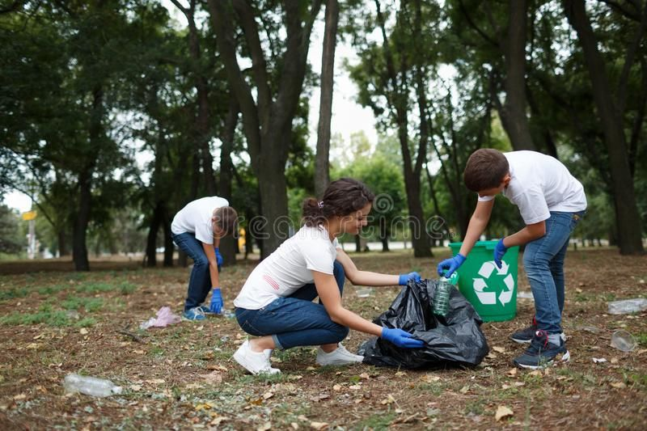

Community Cleanup Success!
August 30, 2024
We successfully organized a community cleanup event at Karura Forest. Over 100 volunteers participated and collected over 500kg of waste! Thanks to everyone who contributed to this successful event.
August 30, 2024
We successfully organized a community cleanup event at Karura Forest. Over 100 volunteers participated and collected over 500kg of waste! Thanks to everyone who contributed to this successful event.
August 25, 2024
We are excited to announce the launch of our new recycling program in Nairobi. This initiative aims to increase recycling rates and reduce waste. Stay tuned for more details on how you can get involved!
August 20, 2024

Our recent donation drive has been a great success. We’ve received an overwhelming response from the community, and all donations are being processed for distribution. Thank you for your generosity!